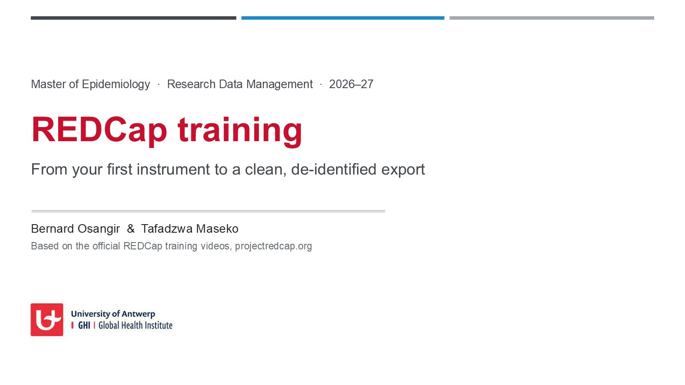

01Start here
What you will do in the session, and in which order.
Look at the paper CRFs
What clinicians fill in at a visit. Every question becomes a REDCap field.
Read the data dictionary
The same forms as a spreadsheet: variable names, codes, validation and branching.
Build TBCARE in REDCap
Upload the dictionary, arms, events and form mapping; set repeating forms and site groups.
Upload simulated data
60 fake participants across both arms and both sites, with unscheduled visits and logs.
Check and link
Find the planted errors, then link participants to the national TB register.
Analyse in R
Run the examples below in your browser, then use REDCapR on your own practice project.
Before you start
Log in at redcap.uantwerpen.be with your student number and UAntwerp password, and create a project with the purpose Practice / Just for fun. Use only the simulated data on this page. Never enter real participant data in a practice project.
02Slides
The full REDCap training deck, 64 slides. Use the arrow keys or swipe; pick a section to jump.

03The roadmap of a REDCap database
Eight steps, in this order. Most problems come from skipping step 5. (Slide 47.)
- Protocol and DMPWhat is collected, and why
- CRFsPaper and annotated forms
- Data dictionaryThe CRFs as a spreadsheet
- BuildIn Development status
- TestFake data, by a second person
- ProductionAfter sign-off
- Collect and cleanQueries, rules, monitoring
- Lock and analyseDe-identified export, R
A change after Production goes back through CRF, dictionary and test (Draft Mode). Changing a field that already holds data can damage it.
04The TBCARE study
A fictional cohort, designed so that every REDCap feature from the session appears at least once.
TBCARE follows adults starting tuberculosis (TB) treatment for 12 months at two hospitals, Antwerp (Belgium) and Mbarara (Uganda). People with drug-susceptible TB and drug-resistant TB are treated for different lengths of time and seen on different schedules, so the project has two arms. Each arm also has an Unscheduled event that can repeat, and a Logs event with two repeating forms: adverse events and medicines.
| Arm 1 · drug-susceptible TB | Arm 2 · drug-resistant TB | |
|---|---|---|
| Participants (simulated) | 48 | 12 |
| Treatment | 6 months | 9 months |
| Scheduled visits | Baseline, months 2, 6, 12 | Baseline, months 1, 2, 4, 6, 9, 12 |
| Extra form | – | ECG monitoring at each treatment visit |
| Repeating event | Unscheduled visit | Unscheduled visit |
| Repeating forms | Adverse events, medicines (Logs event) | Adverse events, medicines (Logs event) |
Which form at which visit
✓ collected · S participant survey · R repeating form. B = baseline, M = month, Uns = Unscheduled.
05Case report forms
The paper forms clinicians print, and the annotated version that maps every question to its REDCap variable.
F1–F3 · Baseline
Screening, e-Consent, enrolment and demographics (identifiers flagged).
F4–F6 · Visits
Clinical assessment, laboratory, ECG (arm 2 only).
F7 · Participant
Quality of life survey, in two languages.
F8–F9 · Logs
Adverse events and medicines: one row = one repeat in REDCap.
F10 · Outcome
WHO treatment outcome at end of treatment; form locked after checking.
F11 · Completion
Study completion at month 12.
06The data dictionary
75 fields on 11 forms, built from the annotated CRFs. Upload it on the Dictionary page of your project. (Slide 49.)
| Variable | Form | Type | Label | Choices / calculation | Validation | Branching | Id. | Annotation |
|---|
Design choices worth noticing
Identifiers flagged (so exports can be de-identified) · calculated fields not on paper · BMI uses [first-event-name] so one formula works in both arms · the four quality-of-life items are a matrix group.
Phone numbers
REDCap's built-in phone validation expects North American numbers, so the phone field has no validation and a field note with the international format.
07Build the project, in this order
Events must exist before forms can be assigned to them, and repeating settings need the events. (Slide 50.)
- Create the project. Purpose: Practice / Just for fun. Start from an empty project.
- Upload the data dictionary. Dictionary > Upload
TBCARE_DataDictionary.csv. REDCap lists any problems before changing anything. - Project Setup: enable longitudinal data collection and surveys.
- Arms and events. Define My Events > upload
TBCARE_arms.csvandTBCARE_events.csv(or type them in: 2 arms, 15 events). - Designate instruments. Upload
TBCARE_instrument_event_mapping.csv, or tick the grid shown in section 04. - Repeating. Project Setup > Repeating instruments and events: make Unscheduled a repeating event (both arms) and adverse_events and concomitant_medications repeating instruments in Logs.
- Data Access Groups. Create Antwerp and Mbarara; their unique names must be
antwerpandmbararato match the data. - Surveys. Enable econsent (with the e-Consent framework) and quality_of_life as surveys.
- Test with three fake records before importing anything; ask a colleague to try to break it.
The upload buttons for arms, events and mappings are on the Define My Events and Designate Instruments pages; their exact place can differ between REDCap versions. Typing them in works just as well.
08Simulated data to upload
60 fake participants, 439 rows. Import with Applications > Data Import Tool. (Slide 51.)
What makes it work
redcap_event_name says which visit; redcap_repeat_instrument and redcap_repeat_instance say which repeat; redcap_data_access_group says which site. Dates are YYYY-MM-DD; checkboxes are one column per option (symptoms___1 …).
Not in the file
Calculated, file and descriptive fields: REDCap calculates age, BMI, adherence, eligibility and outcome itself. If you did not create the site groups, delete the redcap_data_access_group column first.
Data quality exercise
Import TBCARE_simulated_with_errors.csv into a second practice project. It contains seven planted problems. Find them with REDCap's Data Quality rules, with REDCapDM, or with example 3 in the R section below. The answer key is a separate file, so you can try first.
09Record linkage: TBCARE and the national TB register
The register does not know the study ID, so records are linked on a pseudonymised key. (Slide 52.)
Who does it
The data manager, in a secure environment, because linkage needs identifiers.
What leaves
Only the link table (record_id ↔ notification_id) and agreed variables. No identifiers, no key.
In your DMP
Legal basis, data use agreement with the programme, and how unlinked records are handled.
Run it yourself with example 5 below, or download 03_record_linkage.R.
10R in your browser
See the output of each step before you run it against REDCap. The code runs in your browser with webR; nothing is sent anywhere.
How it works
The first time you press Run, the browser downloads R (about 15 MB, once). The examples read the simulated files instead of the API, so they show exactly what redcap_read_oneshot() would return for the TBCARE project. You can edit the code and run it again.
R is not loaded yet.
11R packages for REDCap
Four packages, from reading data to a full pipeline. (Slides 53–57.)
REDCapR CRAN
Reads and writes REDCap data and metadata through the API, in batches or one request. Maintained by the OUHSC BBMC.
install.packages("REDCapR")
library(REDCapR)
ds <- redcap_read_oneshot(uri, token)$data
meta <- redcap_metadata_read(uri, token)$dataDocumentation · CRAN · 01_redcapr_read.R · 02_redcapr_write.R
REDCapDM CRAN 1.0.1
Data management for REDCap projects: transforms the export, finds queries (impossible or missing values), lists missing events and exports query reports for the sites.
install.packages("REDCapDM")
library(REDCapDM)
tb <- rd_transform(redcap_data(uri = uri, token = token))
q <- rd_query(tb, variables = "weight_kg",
expression = "x > 200", event = "baseline_arm_1")REDCapSync CRAN
Keeps a local, standardised copy of a project. Each sync reads the REDCap log and re-downloads only the records that changed.
install.packages("REDCapSync")
project <- REDCapSync::setup_project(project_name = "TBCARE",
redcap_uri = uri, dir_path = getwd())
project$sync()Documentation · R Consortium article · 05_redcapsync_rosyredcap.R
RosyREDCap GitHub
A Shiny app on top of REDCapSync projects for exploratory analysis: switch projects, de-identify, make quick plots.
remotes::install_github("thecodingdocs/RosyREDCap")
RosyREDCap::run_RosyREDCap()Its documentation says it is not yet suited to multi-arm or very large projects. TBCARE has two arms: use it for a first look only.
API tokens are passwords
Put your token in ~/.Renviron (for example REDCAP_TBCARE_TOKEN=…) and read it with Sys.getenv(). Never in a script, on GitHub, in an e-mail or in an AI chat.
12All downloads
| File | What it is |
|---|---|
| Slides (PDF) · PowerPoint | REDCap training, 64 slides |
| Paper CRFs | Blank forms clinicians print and fill in |
| Annotated CRFs | Every question with its variable, type, codes, validation, branching |
| TBCARE_DataDictionary.csv | REDCap data dictionary, 75 fields, 11 forms |
| TBCARE_arms.csv · TBCARE_events.csv · …mapping.csv | Arms, events and which form at which event |
| TBCARE_simulated_import.csv | Clean simulated data, ready for the Data Import Tool |
| TBCARE_simulated_with_errors.csv · answer key | Same data with seven planted errors |
| TBCARE_national_TB_register.csv | Register extract for the record-linkage exercise |
| 01 · 02 · 03 · 04 · 05 | R scripts: read, write, link, queries, sync |
13Sources
- REDCap training videos. projectredcap.org/resources/videos
- Beasley WH, et al. REDCapR: interaction between R and REDCap. ouhscbbmc.github.io/REDCapR; CRAN
- Carmezim J, Satorra P, Peñafiel J, García E, Pallarès N, Tebé C. REDCapDM: REDCap data management, version 1.0.1 (2026). bruigtp.github.io/REDCapDM
- Rose B. REDCapSync and RosyREDCap. thecodingdocs.github.io/REDCapSync; R Consortium, REDCapSync and RosyREDCap for standardized data pipelines and exploratory data analysis
- webR: R in the browser. docs.r-wasm.org/webr
- TBCARE is fictional. All data on this page are simulated by the authors for teaching.